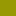

<!doctype html>
<html lang="en">
    <head>
        <meta charset="utf-8">
        <meta http-equiv="X-UA-Compatible" content="IE=edge">
        <meta name="viewport" content="initial-scale=1,user-scalable=no,maximum-scale=1,width=device-width">
        <meta name="mobile-web-app-capable" content="yes">
        <meta name="apple-mobile-web-app-capable" content="yes">
        <link rel="stylesheet" href="css/leaflet.css">
        <link rel="stylesheet" href="css/qgis2web.css"><link rel="stylesheet" href="css/fontawesome-all.min.css">
        <link rel="stylesheet" href="css/leaflet-search.css">
        <link rel="stylesheet" href="css/leaflet-measure.css">
        <style>
        #map {
            width: 1429px;
            height: 1090px;
        }
        </style>
        <title>webmap</title>
    </head>
    <body>
        <div id="map">
        </div>
        <script src="js/qgis2web_expressions.js"></script>
        <script src="js/leaflet.js"></script>
        <script src="js/leaflet.rotatedMarker.js"></script>
        <script src="js/leaflet.pattern.js"></script>
        <script src="js/leaflet-hash.js"></script>
        <script src="js/Autolinker.min.js"></script>
        <script src="js/rbush.min.js"></script>
        <script src="js/labelgun.min.js"></script>
        <script src="js/labels.js"></script>
        <script src="js/leaflet-measure.js"></script>
        <script src="js/leaflet-search.js"></script>
        <script src="data/PNP_plans_eau_0.js"></script>
        <script src="data/PNP_zone_coeur_2.js"></script>
        <script src="data/PNP_zone_optimale_adhesion_3.js"></script>
        <script src="data/PNP_zone_adhesion_4.js"></script>
        <script src="data/PNP_secteurs_5.js"></script>
        <script>
        var map = L.map('map', {
            zoomControl:true, maxZoom:28, minZoom:1
        }).fitBounds([[42.48046278024893,-0.7730527579963262],[43.367144198052,0.38990163833178504]]);
        var hash = new L.Hash(map);
        map.attributionControl.setPrefix('<a href="https://github.com/tomchadwin/qgis2web" target="_blank">qgis2web</a> &middot; <a href="https://leafletjs.com" title="A JS library for interactive maps">Leaflet</a> &middot; <a href="https://qgis.org">QGIS</a>');
        var autolinker = new Autolinker({truncate: {length: 30, location: 'smart'}});
        var measureControl = new L.Control.Measure({
            position: 'topleft',
            primaryLengthUnit: 'meters',
            secondaryLengthUnit: 'kilometers',
            primaryAreaUnit: 'sqmeters',
            secondaryAreaUnit: 'hectares'
        });
        measureControl.addTo(map);
        document.getElementsByClassName('leaflet-control-measure-toggle')[0]
        .innerHTML = '';
        document.getElementsByClassName('leaflet-control-measure-toggle')[0]
        .className += ' fas fa-ruler';
        var bounds_group = new L.featureGroup([]);
        function setBounds() {
        }
        function pop_PNP_plans_eau_0(feature, layer) {
        }

        function style_PNP_plans_eau_0_0() {
            return {
                pane: 'pane_PNP_plans_eau_0',
                opacity: 1,
                color: 'rgba(35,35,35,1.0)',
                dashArray: '',
                lineCap: 'butt',
                lineJoin: 'miter',
                weight: 1.0, 
                fill: true,
                fillOpacity: 1,
                fillColor: 'rgba(133,182,111,1.0)',
                interactive: true,
            }
        }
        map.createPane('pane_PNP_plans_eau_0');
        map.getPane('pane_PNP_plans_eau_0').style.zIndex = 400;
        map.getPane('pane_PNP_plans_eau_0').style['mix-blend-mode'] = 'normal';
        var layer_PNP_plans_eau_0 = new L.geoJson(json_PNP_plans_eau_0, {
            attribution: '',
            interactive: true,
            dataVar: 'json_PNP_plans_eau_0',
            layerName: 'layer_PNP_plans_eau_0',
            pane: 'pane_PNP_plans_eau_0',
            onEachFeature: pop_PNP_plans_eau_0,
            style: style_PNP_plans_eau_0_0,
        });
        bounds_group.addLayer(layer_PNP_plans_eau_0);
        map.addLayer(layer_PNP_plans_eau_0);
        map.createPane('pane_GoogleTerrain_1');
        map.getPane('pane_GoogleTerrain_1').style.zIndex = 401;
        var layer_GoogleTerrain_1 = L.tileLayer('https://mt1.google.com/vt/lyrs=p&x={x}&y={y}&z={z}', {
            pane: 'pane_GoogleTerrain_1',
            opacity: 0.5,
            attribution: '<a href="https://www.google.at/permissions/geoguidelines/attr-guide.html">Map data ©2015 Google</a>',
            minZoom: 1,
            maxZoom: 28,
            minNativeZoom: 0,
            maxNativeZoom: 20
        });
        layer_GoogleTerrain_1;
        map.addLayer(layer_GoogleTerrain_1);
        function pop_PNP_zone_coeur_2(feature, layer) {
            var popupContent = '<table>\
                    <tr>\
                        <td colspan="2">' + (feature.properties['id'] !== null ? autolinker.link(feature.properties['id'].toLocaleString()) : '') + '</td>\
                    </tr>\
                    <tr>\
                        <td colspan="2">' + (feature.properties['nom'] !== null ? autolinker.link(feature.properties['nom'].toLocaleString()) : '') + '</td>\
                    </tr>\
                </table>';
            layer.bindPopup(popupContent, {maxHeight: 400});
        }

        function style_PNP_zone_coeur_2_0() {
            return {
                pane: 'pane_PNP_zone_coeur_2',
                opacity: 1,
                color: 'rgba(35,35,35,0.0)',
                dashArray: '',
                lineCap: 'butt',
                lineJoin: 'miter',
                weight: 1.0, 
                fill: true,
                fillOpacity: 1,
                fillColor: 'rgba(146,0,39,1.0)',
                interactive: true,
            }
        }
        map.createPane('pane_PNP_zone_coeur_2');
        map.getPane('pane_PNP_zone_coeur_2').style.zIndex = 402;
        map.getPane('pane_PNP_zone_coeur_2').style['mix-blend-mode'] = 'normal';
        var layer_PNP_zone_coeur_2 = new L.geoJson(json_PNP_zone_coeur_2, {
            attribution: '',
            interactive: true,
            dataVar: 'json_PNP_zone_coeur_2',
            layerName: 'layer_PNP_zone_coeur_2',
            pane: 'pane_PNP_zone_coeur_2',
            onEachFeature: pop_PNP_zone_coeur_2,
            style: style_PNP_zone_coeur_2_0,
        });
        bounds_group.addLayer(layer_PNP_zone_coeur_2);
        map.addLayer(layer_PNP_zone_coeur_2);
        function pop_PNP_zone_optimale_adhesion_3(feature, layer) {
            var popupContent = '<table>\
                    <tr>\
                        <td colspan="2">' + (feature.properties['ID'] !== null ? autolinker.link(feature.properties['ID'].toLocaleString()) : '') + '</td>\
                    </tr>\
                    <tr>\
                        <th scope="row">Libellé</th>\
                        <td>' + (feature.properties['Libellé'] !== null ? autolinker.link(feature.properties['Libellé'].toLocaleString()) : '') + '</td>\
                    </tr>\
                </table>';
            layer.bindPopup(popupContent, {maxHeight: 400});
        }

        function style_PNP_zone_optimale_adhesion_3_0() {
            return {
                pane: 'pane_PNP_zone_optimale_adhesion_3',
                opacity: 1,
                color: 'rgba(35,35,35,0.0)',
                dashArray: '',
                lineCap: 'butt',
                lineJoin: 'miter',
                weight: 1.0, 
                fill: true,
                fillOpacity: 1,
                fillColor: 'rgba(151,153,3,1.0)',
                interactive: false,
            }
        }
        map.createPane('pane_PNP_zone_optimale_adhesion_3');
        map.getPane('pane_PNP_zone_optimale_adhesion_3').style.zIndex = 403;
        map.getPane('pane_PNP_zone_optimale_adhesion_3').style['mix-blend-mode'] = 'normal';
        var layer_PNP_zone_optimale_adhesion_3 = new L.geoJson(json_PNP_zone_optimale_adhesion_3, {
            attribution: '',
            interactive: false,
            dataVar: 'json_PNP_zone_optimale_adhesion_3',
            layerName: 'layer_PNP_zone_optimale_adhesion_3',
            pane: 'pane_PNP_zone_optimale_adhesion_3',
            onEachFeature: pop_PNP_zone_optimale_adhesion_3,
            style: style_PNP_zone_optimale_adhesion_3_0,
        });
        bounds_group.addLayer(layer_PNP_zone_optimale_adhesion_3);
        map.addLayer(layer_PNP_zone_optimale_adhesion_3);
        function pop_PNP_zone_adhesion_4(feature, layer) {
            var popupContent = '<table>\
                    <tr>\
                        <td colspan="2">' + (feature.properties['id'] !== null ? autolinker.link(feature.properties['id'].toLocaleString()) : '') + '</td>\
                    </tr>\
                    <tr>\
                        <td colspan="2">' + (feature.properties['nom'] !== null ? autolinker.link(feature.properties['nom'].toLocaleString()) : '') + '</td>\
                    </tr>\
                </table>';
            layer.bindPopup(popupContent, {maxHeight: 400});
        }

        function style_PNP_zone_adhesion_4_0() {
            return {
                pane: 'pane_PNP_zone_adhesion_4',
                opacity: 1,
                color: 'rgba(35,35,35,0.0)',
                dashArray: '',
                lineCap: 'butt',
                lineJoin: 'miter',
                weight: 1.0, 
                fill: true,
                fillOpacity: 1,
                fillColor: 'rgba(8,120,64,1.0)',
                interactive: true,
            }
        }
        map.createPane('pane_PNP_zone_adhesion_4');
        map.getPane('pane_PNP_zone_adhesion_4').style.zIndex = 404;
        map.getPane('pane_PNP_zone_adhesion_4').style['mix-blend-mode'] = 'normal';
        var layer_PNP_zone_adhesion_4 = new L.geoJson(json_PNP_zone_adhesion_4, {
            attribution: '',
            interactive: true,
            dataVar: 'json_PNP_zone_adhesion_4',
            layerName: 'layer_PNP_zone_adhesion_4',
            pane: 'pane_PNP_zone_adhesion_4',
            onEachFeature: pop_PNP_zone_adhesion_4,
            style: style_PNP_zone_adhesion_4_0,
        });
        bounds_group.addLayer(layer_PNP_zone_adhesion_4);
        map.addLayer(layer_PNP_zone_adhesion_4);
        function pop_PNP_secteurs_5(feature, layer) {
            var popupContent = '<table>\
                    <tr>\
                        <td colspan="2"><strong>ID</strong><br />' + (feature.properties['ID'] !== null ? autolinker.link(feature.properties['ID'].toLocaleString()) : '') + '</td>\
                    </tr>\
                    <tr>\
                        <th scope="row">Nom</th>\
                        <td>' + (feature.properties['Nom'] !== null ? autolinker.link(feature.properties['Nom'].toLocaleString()) : '') + '</td>\
                    </tr>\
                </table>';
            layer.bindPopup(popupContent, {maxHeight: 400});
        }

        function style_PNP_secteurs_5_0() {
            return {
                pane: 'pane_PNP_secteurs_5',
                opacity: 1,
                color: 'rgba(0,0,0,1.0)',
                dashArray: '',
                lineCap: 'butt',
                lineJoin: 'miter',
                weight: 1.0, 
                fill: true,
                fillOpacity: 1,
                fillColor: 'rgba(213,180,60,0.0)',
                interactive: true,
            }
        }
        map.createPane('pane_PNP_secteurs_5');
        map.getPane('pane_PNP_secteurs_5').style.zIndex = 405;
        map.getPane('pane_PNP_secteurs_5').style['mix-blend-mode'] = 'normal';
        var layer_PNP_secteurs_5 = new L.geoJson(json_PNP_secteurs_5, {
            attribution: '',
            interactive: true,
            dataVar: 'json_PNP_secteurs_5',
            layerName: 'layer_PNP_secteurs_5',
            pane: 'pane_PNP_secteurs_5',
            onEachFeature: pop_PNP_secteurs_5,
            style: style_PNP_secteurs_5_0,
        });
        bounds_group.addLayer(layer_PNP_secteurs_5);
        map.addLayer(layer_PNP_secteurs_5);
            var title = new L.Control();
            title.onAdd = function (map) {
                this._div = L.DomUtil.create('div', 'info');
                this.update();
                return this._div;
            };
            title.update = function () {
                this._div.innerHTML = '<h2>webmap</h2>';
            };
            title.addTo(map);
        var baseMaps = {};
        L.control.layers(baseMaps,{' PNP_secteurs': layer_PNP_secteurs_5,' PNP_zone_adhesion': layer_PNP_zone_adhesion_4,' PNP_zone_optimale_adhesion': layer_PNP_zone_optimale_adhesion_3,' PNP_zone_coeur': layer_PNP_zone_coeur_2,"Google Terrain": layer_GoogleTerrain_1,' PNP_plans_eau': layer_PNP_plans_eau_0,}).addTo(map);
        setBounds();
        var i = 0;
        layer_PNP_secteurs_5.eachLayer(function(layer) {
            var context = {
                feature: layer.feature,
                variables: {}
            };
            layer.bindTooltip((layer.feature.properties['Nom'] !== null?String('<div style="color: #323232; font-size: 10pt; font-weight: bold; font-style: italic; font-family: \'Bahnschrift\', sans-serif;">' + layer.feature.properties['Nom']) + '</div>':''), {permanent: true, offset: [-0, -16], className: 'css_PNP_secteurs_5'});
            labels.push(layer);
            totalMarkers += 1;
              layer.added = true;
              addLabel(layer, i);
              i++;
        });
        map.addControl(new L.Control.Search({
            layer: layer_PNP_zone_adhesion_4,
            initial: false,
            hideMarkerOnCollapse: true,
            propertyName: 'nom'}));
        document.getElementsByClassName('search-button')[0].className +=
         ' fa fa-binoculars';
        resetLabels([layer_PNP_secteurs_5]);
        map.on("zoomend", function(){
            resetLabels([layer_PNP_secteurs_5]);
        });
        map.on("layeradd", function(){
            resetLabels([layer_PNP_secteurs_5]);
        });
        map.on("layerremove", function(){
            resetLabels([layer_PNP_secteurs_5]);
        });
        </script>
    </body>
</html>
